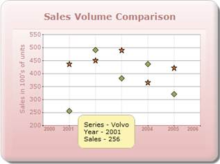

The ToolTip feature allows users to display the tooltip for the Chart point, Chart Series, and ChartArea by using custom string formatting.
The ChartModel.ShowTooltips property enables the Tooltip for all the chart regions. To render all the ChartRegions, you need to set the ChartModel.Calcregions property to true.
Essential Chart supports ToolTips in different areas of the chart, which comes with multiple customization options.
The different tooltips in the chart can be turned off by using the control's ShowToolTips property.
The steps to implement tooltip support for the Chart series are as follows:
Controller:
Step 1:
Set the properties of the Chart series, displayed below, to get tooltip support for the Chart series.
//Enabling the tooltip support
chartModel.ShowToolTip = true;
chartModel.CalcRegions = true;
//Setting the Tooltip Format
series.PointsToolTipFormat = "{1}{2}";
//Calling the event for tooltip for chart series
series.PrepareStyle += new ChartPrepareStyleInfoHandler(show_ToolTip);
Step 2:
Add the call back event for the tooltip, displayed below, in the Controller. By using the ToolTip property of the ChartPrepareStyleInfoEventArgs event class, you can set the content to be displayed in the tooltip.
// Style formatting using a callback.
//You can apply the same settings directly on the series style on the point styles.
void show_ToolTip (object sender, ChartPrepareStyleInfoEventArgs args)
{
ChartSeries series = sender as ChartSeries;
if (series != null)
{
ChartPoint chpt = new ChartPoint(series.Points[args.Index].X, series.Points[args.Index].YValues[0]);
Point pt = chartModel.ChartArea.GetPointByValue(chpt);
ChartPoint cpoint = chartModel.ChartArea.GetValueByPoint(pt);
args.Style.ToolTip = "Series - " + series.Name + "<br/>Year - " + Math.Round(chpt.X, 2).ToString() + "<br/>Sales - " + Math.Round(chpt.YValues[0], 2).ToString();
}
}
Step 3:
Add the code displayed below in the aspx file.
View [ASPX]
<%--Rendering the Chart COntrol--%>
<%= Html.Chart("ChartModel",(MVCChartModel)ViewData["ChartModel"]) %>
View [cshtml]
@*--Rendering the Chart Control--*@
@(new HtmlString(Html.Chart("ChartModel",(MVCChartModel)ViewData["ChartModel"]).ToString()))
Step 4:
Run the code.

Figure 332: Chart ToolTip
 DataPoint Tooltips
DataPoint Tooltips